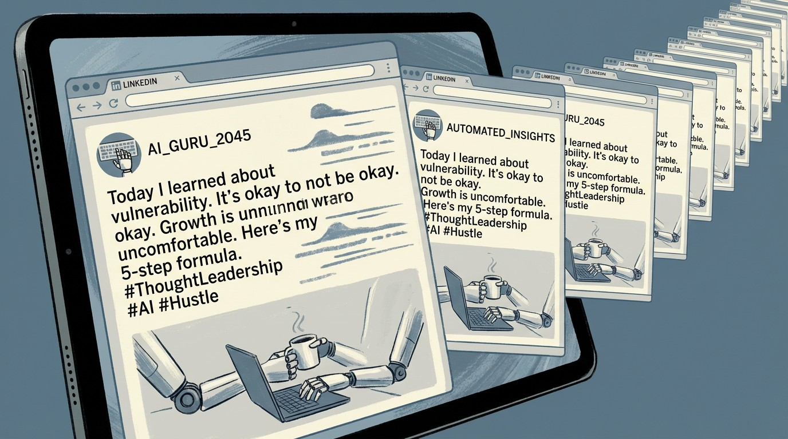

54% of LinkedIn's "Thought Leaders" Are Robots Now. The Other 46% Are Worried.
An analysis of 8,795 LinkedIn posts found more than half of long-form content is likely AI-generated. Those posts get 45% less engagement. LinkedIn just crossed $5 billion in quarterly revenue. The platform has no financial reason to fix this.

Here is a LinkedIn post:
I got fired on a Tuesday.
Not laid off. Not "restructured." Fired.
I sat in my car for 45 minutes. I didn't cry. I didn't call anyone.
I just... sat.
That was three years ago. Today I run a company with 47 employees.
Here's what nobody tells you about failure:
It's a feature, not a bug. 🧵👇
I didn't write that. Neither did a human. I asked ChatGPT for "a typical viral LinkedIn post" and that's what it produced in about four seconds. It nailed the format perfectly: the one-line paragraphs, the manufactured vulnerability, the pivot to triumph, the thread emoji. The genre has a name. It's called "broetry," coined by journalist Lorcan Roche Kelly in 2017, and it was already formulaic enough to parody before large language models existed. Now it's formulaic enough to automate.
The question isn't whether AI has come for LinkedIn. A study by Originality.AI analyzed 8,795 long-form LinkedIn posts published over an 82-month period from January 2018 through October 2024 and found that 54% of posts published since mid-2023 are likely AI-generated or heavily AI-edited. The question is what happens to a $20-billion-a-year platform when the thing it sells access to — professional credibility — becomes indistinguishable from a ChatGPT prompt.
The 189% Spike That Never Came Back Down
Before ChatGPT's release in late November 2022, the Originality.AI study found that AI-detectable content on LinkedIn was negligible. Between January and February 2023, the percentage of posts flagged as likely AI-generated surged 189%. It has not returned to pre-ChatGPT levels. As of October 2024, the new baseline is roughly half of all long-form content.
The shift wasn't just in prevalence. It was in length. The average word count of LinkedIn posts increased 107% in correlation with AI adoption. People didn't just start using AI to write their posts. They started writing longer posts because AI made it effortless. The cost of producing a 500-word thought leadership post dropped from the 30-45 minutes a competent writer might spend to the four seconds it took ChatGPT to produce my fake firing story above.
And the market noticed. Likely AI-generated posts received 45% less engagement than likely human-written posts in the Originality.AI dataset. Humans, it turns out, can smell synthetic authenticity even when they can't articulate what's wrong with it. The manufactured vulnerability that makes broetry work — that faint whiff of something actually confessional — collapses when you scale it to 54% of the feed.
The LinkedIn AI Content Timeline
LinkedIn's Incentive Problem
To understand why LinkedIn is unlikely to solve this, look at the financial structure. In Microsoft's Q2 FY2026 earnings, LinkedIn revenue grew 11% year-over-year, driven primarily by Marketing Solutions (ads). Video ad revenue grew 30%. The platform now has 1.2 billion members. Comments are up 30% year-over-year. Video uploads are up 20%.
Every one of those metrics benefits from more content, regardless of whether that content is human or synthetic. An AI-generated post that gets scrolled past still counts as an impression. An AI-generated comment still counts as engagement. An AI-optimized profile still triggers a Premium subscription.
LinkedIn isn't ignoring the problem entirely. In a March 2026 blog post, the platform announced it would limit the reach of detected automated comments, crack down on engagement pods, and expand verification badges (over 100 million members have added at least one). But notice what's absent from that announcement: any mention of AI-generated posts. LinkedIn's enforcement targets the comment layer, not the content layer. It's cleaning up the bar while the kitchen keeps serving reheated food.
This isn't mysterious. LinkedIn sells AI writing tools. Premium subscribers get AI-powered post drafting, profile optimization, and job search features. Nearly 40% of subscribers have used these features. Cracking down on AI-generated content would mean cracking down on the output of a tool that helps justify a Premium subscription that generates $2 billion in annual revenue. That's not a conflict of interest the company is going to resolve in favor of authenticity.
The Thought Leadership Industrial Complex
Blaming AI for LinkedIn's authenticity crisis gets the timeline wrong. The rot predates large language models by years.
The 2024 Edelman-LinkedIn B2B Thought Leadership Impact Report, which surveyed nearly 3,500 management-level professionals, found that 75% of decision-makers said a piece of thought leadership led them to research a product they weren't previously considering. 70% of C-suite executives said thought leadership led them to question an existing supplier relationship. 86% said they were more likely to invite organizations that produce high-quality thought leadership to participate in RFP processes.
Those numbers create an enormous economic incentive. Run the math: if 75% of decision-makers say thought leadership influenced a product evaluation, and average B2B deal sizes in enterprise software run $50,000-$500,000, then even a 1% conversion lift from a LinkedIn post represents $500-$5,000 per post in expected value. A Fortune 500 CMO looking at that math pointed toward professional ghostwriters long before ChatGPT existed.
The global ghostwriting market was valued at $1.9 billion in 2022, and LinkedIn ghostwriting is its fastest-growing segment. Zipdo's industry survey estimates 10% of all ghostwriting projects are now for LinkedIn articles and thought leadership pieces. Entire agencies specialize in it: they'll interview a CEO for 30 minutes, produce four weeks of "personal" LinkedIn content, manage the engagement in the comments, and charge $5,000-$15,000 per month.
AI didn't create the authenticity gap. It just made it free.
The Cost of "Thought Leadership" Over Time
| Method | Cost/Post | Time | Who Knows |
|---|---|---|---|
| Human writes own post | $0 | 30-60 min | Just you |
| Freelance ghostwriter | $200-500 | 2-4 hours | You + the writer |
| Agency ghostwriting retainer | $300-800 | 1-3 hours | You + the agency + their interns |
| AI + human editing | $0-20 | 10-15 min | You + OpenAI's servers |
| Raw AI generation | $0 | 4 seconds | Everyone, apparently |
The Engagement Layer Is Also Synthetic
It's not just the posts. LinkedIn's comment sections have become a separate ecosystem of synthetic engagement, and the platform knows it. LinkedIn's own March 2026 announcement specifically targets automated comments: "Automated comments are comments posted to LinkedIn using a browser extension, script, or third party tool. They don't include human action or clicking the 'comment' button, and they aren't allowed on LinkedIn."
The fact that LinkedIn had to publish that statement tells you how pervasive the problem is. Engagement pods, groups of users who agree to like and comment on each other's posts to game the algorithm, have been a LinkedIn fixture for years. Third-party tools like Lempod, Podawaa, and dozens of Chrome extensions automated the process. Now AI writes the comments themselves, making them harder to distinguish from genuine responses.
LinkedIn's algorithm rewards engagement velocity: posts that receive quick likes and comments are promoted to wider audiences. This creates a flywheel: AI generates the post, AI generates the initial engagement burst, the algorithm amplifies the post based on that engagement, and real humans see a piece of content that appears popular. The humans engage with it, validating the synthetic signal. The poster builds a following. The follower count unlocks speaking invitations, consulting gigs, book deals. The credentials loop back into more "thought leadership."
LinkedIn says it's implementing detection systems that will "sometimes reduce reach" of automated comments. "Sometimes" is doing heavy lifting in that sentence.
The Credentialism Death Spiral
LinkedIn's deeper problem is that AI didn't just flood the content layer. It's undermining the credential layer that makes LinkedIn's content valuable in the first place.
A LinkedIn profile is a reputation document. It signals competence through job titles, endorsements, recommendations, and published content. Every one of these is now AI-optimizable. Tools will rewrite your profile summary for $10. Endorsements are already low-signal (people endorse skills they've never observed). Recommendations can be drafted by AI and lightly personalized. Published content is 54% AI-generated.
When every signal can be manufactured, no signal means anything. This is Goodhart's Law applied to professional identity: when a measure becomes a target, it ceases to be a good measure. LinkedIn engagement became a proxy for professional credibility. People optimized for the proxy. The proxy stopped measuring what it was supposed to measure.
The platform's verification push (100 million members with at least one badge) is an implicit admission that the content-based signals have degraded. LinkedIn is trying to shift trust from "what you say" to "who you provably are." But verification only confirms identity. It doesn't confirm that the verified person wrote their own posts, or that their "thought leadership" contains an original thought.
The Signal Degradation Stack
The Paradox: AI Might Save Genuine Expertise
Here's the counterintuitive thing. When the floor drops out of content production costs, the ceiling value of genuine expertise rises.
The Edelman-LinkedIn data tells a revealing story when you read it against the AI content flood. Decision-makers overwhelmingly say thought leadership influences their purchasing: 75% explored a new product because of it, 70% of C-suite reconsidered a supplier relationship. But 55% said the highest quality thought leadership "references strong data and research," and 66% said "unique format or style" distinguished good from average content.
Strong data. Unique style. Those are precisely the things AI-generated content struggles to provide. ChatGPT can produce a perfectly structured 500-word post about "5 lessons from scaling a startup." It cannot produce a post that says "We ran this exact experiment on our 2,400-person sales team last quarter and here's the Excel sheet." The former is 54% of LinkedIn. The latter is what decision-makers say they actually act on.
The irony is that AI is performing a kind of natural selection on LinkedIn content. The engagement data from Originality.AI shows it's already happening: AI posts get 45% less engagement. Humans are already filtering, even if they're doing it unconsciously. The people whose posts are 90% personal experience and 10% polish will become more visible as the algorithm learns that their content gets genuine engagement. The people whose posts are 90% AI polish and 10% personal experience will become more visible only to each other.
Over 90% of LinkedIn's 1.2 billion members rarely post. The creator pool has always been small. If you're an actual expert who's been writing your own content all along, the noise might be the best thing that ever happened to your signal.
What LinkedIn Could Do (But Probably Won't)
LinkedIn could label AI-generated or AI-assisted content, the way some platforms label AI-generated images. They could require disclosure when posts are substantially AI-authored. They could adjust the algorithm to weight engagement quality (reply depth, time spent reading) over engagement quantity (like counts, comment volume). They could stop selling AI writing tools that produce the same content they'd need to label.
They probably won't do most of this. LinkedIn's Q2 FY2026 revenue of $5 billion, with marketing solutions as the primary growth driver, means any intervention that reduces content volume or engagement metrics has a direct, measurable cost. The platform's position within Microsoft's Productivity and Business Processes segment, which generated $34.1 billion in the quarter, gives LinkedIn the corporate cover to prioritize growth metrics over content quality.
What LinkedIn will do is continue expanding verification, because verification is additive. It doesn't reduce content or engagement. It layers new signal on top of degraded signal. Whether that's sufficient to maintain the platform's value as a trust network is the billion-dollar question.
Limitations
The Originality.AI study, while the most rigorous analysis of AI content on LinkedIn available, has meaningful constraints. It analyzed 8,795 posts over 82 months, a sample that represents a tiny fraction of LinkedIn's total content volume. The study focused exclusively on English-language long-form posts of 100+ words, which skews toward the exact content type most likely to be AI-generated; short status updates and non-English content are excluded. AI detection tools, including Originality.AI's, produce both false positives and false negatives, with accuracy varying depending on the level of human editing applied to AI-generated text. The 54% figure should be understood as "likely AI-generated or heavily AI-edited" rather than "definitely written by a machine." The 45% engagement gap, measured by likes and comments, does not account for impressions, shares, or downstream business impact. LinkedIn does not publicly disclose what percentage of content it identifies as AI-generated, making independent verification impossible.
The Strongest Counterargument
The most serious objection to this analysis is that it conflates two different phenomena. AI as a writing tool is not the same as AI as a writing replacement. A cardiologist who uses ChatGPT to polish a post about a novel surgical technique she actually developed is doing something fundamentally different from a "growth hacker" who uses ChatGPT to generate generic leadership advice from scratch. The Originality.AI methodology doesn't distinguish between these cases. If a significant portion of the 54% consists of genuine experts using AI as an editing layer, then the authenticity crisis is much less severe than the headline suggests. The engagement penalty could reflect AI's stylistic tells rather than a lack of substance. It's possible that the real problem is narrower than it appears: not that experts are using AI to write, but that non-experts are using AI to sound like experts. Those are different diseases requiring different treatments.
The Bottom Line
LinkedIn built a $20-billion-a-year business on the premise that professional content signals professional competence. That premise is now testable, and the early data says it's failing. More than half the long-form content is AI-generated. That content gets less engagement. LinkedIn's response is to crack down on fake comments while selling AI writing tools to create more posts. The platform is simultaneously the arsonist and the fire department, and the fire department has a revenue target.
If you're a genuine expert who writes your own content, the flood is actually your moat. Authenticity is becoming a luxury good — rare, recognizable, and more valuable precisely because there's so much synthetic substitute on the shelf. The 90% of LinkedIn's 1.2 billion members who never post might be the smartest people on the platform. They figured out the optimal strategy before the AI arms race even started: read everything, write nothing, trust nobody.